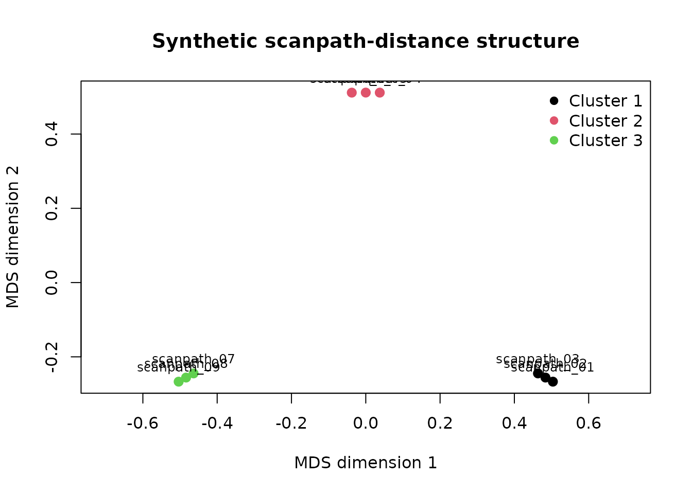
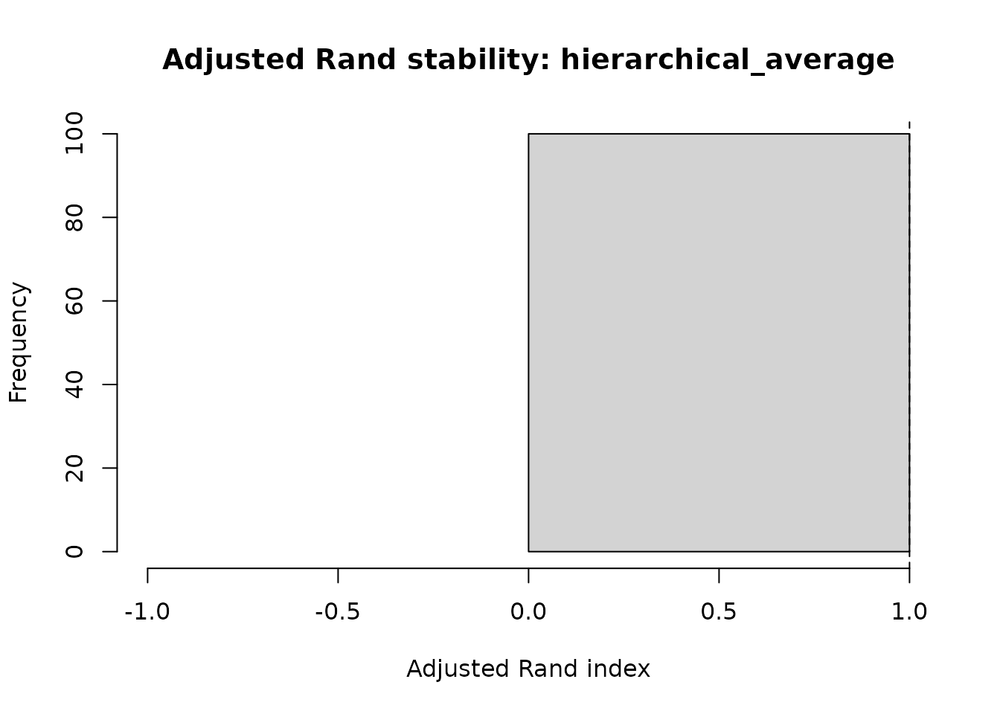
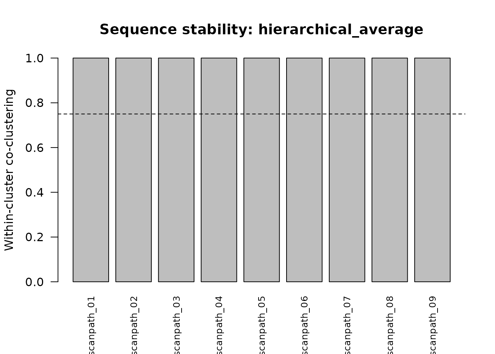

Scanpath-cluster stability and sensitivity
Source:vignettes/articles/scanpath-cluster-stability.Rmd
scanpath-cluster-stability.RmdScope
Cluster assignments can change when scanpaths, linkage methods, or distance definitions change. This article demonstrates a lightweight subsampling workflow for evaluating that sensitivity.
The workflow records:
- full-data reference solutions;
- iteration-level adjusted Rand agreement;
- pairwise co-clustering probabilities;
- pair-coverage rates;
- sequence-level within-cluster stability;
- representative-scanpath selection rates;
- sensitivity across hierarchical linkage methods.
These diagnostics quantify reproducibility under the specified resampling scheme. They do not prove that a cluster solution represents a true latent cognitive strategy.
Synthetic distance structure
The example contains nine scanpaths arranged around three synthetic sequence patterns. Within-pattern distances are small and between-pattern distances are larger, with modest deterministic variation.
sequence_ids <- paste0("scanpath_", sprintf("%02d", 1:9))
latent_cluster <- rep(1:3, each = 3)
distance_matrix <- outer(
seq_along(sequence_ids),
seq_along(sequence_ids),
FUN = function(i, j) {
ifelse(
latent_cluster[i] == latent_cluster[j],
0.08 + 0.01 * abs(i - j),
0.85 + 0.02 * abs(i - j)
)
}
)
diag(distance_matrix) <- 0
dimnames(distance_matrix) <- list(
sequence_ids,
sequence_ids
)
round(distance_matrix, 2)
#> scanpath_01 scanpath_02 scanpath_03 scanpath_04 scanpath_05
#> scanpath_01 0.00 0.09 0.10 0.91 0.93
#> scanpath_02 0.09 0.00 0.09 0.89 0.91
#> scanpath_03 0.10 0.09 0.00 0.87 0.89
#> scanpath_04 0.91 0.89 0.87 0.00 0.09
#> scanpath_05 0.93 0.91 0.89 0.09 0.00
#> scanpath_06 0.95 0.93 0.91 0.10 0.09
#> scanpath_07 0.97 0.95 0.93 0.91 0.89
#> scanpath_08 0.99 0.97 0.95 0.93 0.91
#> scanpath_09 1.01 0.99 0.97 0.95 0.93
#> scanpath_06 scanpath_07 scanpath_08 scanpath_09
#> scanpath_01 0.95 0.97 0.99 1.01
#> scanpath_02 0.93 0.95 0.97 0.99
#> scanpath_03 0.91 0.93 0.95 0.97
#> scanpath_04 0.10 0.91 0.93 0.95
#> scanpath_05 0.09 0.89 0.91 0.93
#> scanpath_06 0.00 0.87 0.89 0.91
#> scanpath_07 0.87 0.00 0.09 0.10
#> scanpath_08 0.89 0.09 0.00 0.09
#> scanpath_09 0.91 0.10 0.09 0.00Reference clustering
reference_fit <- cluster_gazepoint_scanpaths(
distance_matrix,
k = 3,
method = "hierarchical",
linkage = "average"
)
reference_fit$assignments
#> sequence_id cluster
#> 1 scanpath_01 1
#> 2 scanpath_02 1
#> 3 scanpath_03 1
#> 4 scanpath_04 2
#> 5 scanpath_05 2
#> 6 scanpath_06 2
#> 7 scanpath_07 3
#> 8 scanpath_08 3
#> 9 scanpath_09 3
plot_gazepoint_scanpath_clusters(
reference_fit,
plot = "mds",
main = "Synthetic scanpath-distance structure"
)
Subsampling stability
Each iteration retains 80% of scanpaths without replacement, refits the three-cluster solution, and compares it with the corresponding full-data reference partition.
stability <- bootstrap_gazepoint_scanpath_clusters(
distance_matrix,
k = 3,
n_boot = 100,
sample_fraction = 0.8,
method = "hierarchical",
linkages = c("average", "complete", "ward.D2"),
seed = 20260715
)
utils::head(stability$iteration_summary)
#> specification method linkage iteration n_sampled
#> 1 hierarchical_average hierarchical average 1 8
#> 2 hierarchical_average hierarchical average 2 8
#> 3 hierarchical_average hierarchical average 3 8
#> 4 hierarchical_average hierarchical average 4 8
#> 5 hierarchical_average hierarchical average 5 8
#> 6 hierarchical_average hierarchical average 6 8
#> adjusted_rand_index mean_silhouette_width
#> 1 1 0.8980393
#> 2 1 0.8980393
#> 3 1 0.8981667
#> 4 1 0.8981667
#> 5 1 0.8980393
#> 6 1 0.8981667The seed is local to the helper: the caller’s random-number state is restored after the routine finishes.
Adjusted Rand agreement
plot_gazepoint_scanpath_cluster_stability(
stability,
plot = "ari",
specification = "hierarchical_average"
)
The adjusted Rand index compares a subsampled partition with the full-data reference partition after restricting both to the sampled scanpaths. Values near one indicate strong agreement; lower values identify sensitivity to the particular scanpaths retained.
Co-clustering probabilities
plot_gazepoint_scanpath_cluster_stability(
stability,
plot = "coclustering",
specification = "hierarchical_average"
)Each cell reports the proportion of iterations in which two observed scanpaths were assigned to the same cluster, conditional on both being sampled. Pair coverage is retained separately because some pairs may co-occur less often than others.
round(
stability$pair_coverage$hierarchical_average,
2
)
#> scanpath_01 scanpath_02 scanpath_03 scanpath_04 scanpath_05
#> scanpath_01 0.92 0.82 0.81 0.77 0.81
#> scanpath_02 0.82 0.90 0.79 0.75 0.79
#> scanpath_03 0.81 0.79 0.89 0.74 0.78
#> scanpath_04 0.77 0.75 0.74 0.85 0.74
#> scanpath_05 0.81 0.79 0.78 0.74 0.89
#> scanpath_06 0.77 0.75 0.74 0.70 0.74
#> scanpath_07 0.82 0.80 0.79 0.75 0.79
#> scanpath_08 0.81 0.79 0.78 0.74 0.78
#> scanpath_09 0.83 0.81 0.80 0.76 0.80
#> scanpath_06 scanpath_07 scanpath_08 scanpath_09
#> scanpath_01 0.77 0.82 0.81 0.83
#> scanpath_02 0.75 0.80 0.79 0.81
#> scanpath_03 0.74 0.79 0.78 0.80
#> scanpath_04 0.70 0.75 0.74 0.76
#> scanpath_05 0.74 0.79 0.78 0.80
#> scanpath_06 0.85 0.75 0.74 0.76
#> scanpath_07 0.75 0.90 0.79 0.81
#> scanpath_08 0.74 0.79 0.89 0.80
#> scanpath_09 0.76 0.81 0.80 0.91Compact stability summaries
stability_summary <-
summarise_gazepoint_scanpath_cluster_stability(
stability,
min_pair_coverage = 0.50,
stable_threshold = 0.75
)
stability_summary$overview
#> specification method linkage k n_boot sample_size
#> 1 hierarchical_average hierarchical average 3 100 8
#> 2 hierarchical_complete hierarchical complete 3 100 8
#> 3 hierarchical_ward.D2 hierarchical ward.D2 3 100 8
#> mean_adjusted_rand_index sd_adjusted_rand_index min_adjusted_rand_index
#> 1 1 0 1
#> 2 1 0 1
#> 3 1 0 1
#> mean_within_cluster_coclustering mean_between_cluster_coclustering
#> 1 1 0
#> 2 1 0
#> 3 1 0
#> mean_sequence_stability min_sequence_stability pct_sequences_stable
#> 1 1 1 100
#> 2 1 1 100
#> 3 1 1 100
#> stability_status
#> 1 stable
#> 2 stable
#> 3 stable
stability_summary$sequence_summary
#> specification sequence_id reference_cluster within_cluster_stability
#> 1 hierarchical_average scanpath_01 1 1
#> 2 hierarchical_average scanpath_02 1 1
#> 3 hierarchical_average scanpath_03 1 1
#> 4 hierarchical_average scanpath_04 2 1
#> 5 hierarchical_average scanpath_05 2 1
#> 6 hierarchical_average scanpath_06 2 1
#> 7 hierarchical_average scanpath_07 3 1
#> 8 hierarchical_average scanpath_08 3 1
#> 9 hierarchical_average scanpath_09 3 1
#> 10 hierarchical_complete scanpath_01 1 1
#> 11 hierarchical_complete scanpath_02 1 1
#> 12 hierarchical_complete scanpath_03 1 1
#> 13 hierarchical_complete scanpath_04 2 1
#> 14 hierarchical_complete scanpath_05 2 1
#> 15 hierarchical_complete scanpath_06 2 1
#> 16 hierarchical_complete scanpath_07 3 1
#> 17 hierarchical_complete scanpath_08 3 1
#> 18 hierarchical_complete scanpath_09 3 1
#> 19 hierarchical_ward.D2 scanpath_01 1 1
#> 20 hierarchical_ward.D2 scanpath_02 1 1
#> 21 hierarchical_ward.D2 scanpath_03 1 1
#> 22 hierarchical_ward.D2 scanpath_04 2 1
#> 23 hierarchical_ward.D2 scanpath_05 2 1
#> 24 hierarchical_ward.D2 scanpath_06 2 1
#> 25 hierarchical_ward.D2 scanpath_07 3 1
#> 26 hierarchical_ward.D2 scanpath_08 3 1
#> 27 hierarchical_ward.D2 scanpath_09 3 1
#> between_cluster_coclustering stability_separation n_within_pairs
#> 1 0 1 2
#> 2 0 1 2
#> 3 0 1 2
#> 4 0 1 2
#> 5 0 1 2
#> 6 0 1 2
#> 7 0 1 2
#> 8 0 1 2
#> 9 0 1 2
#> 10 0 1 2
#> 11 0 1 2
#> 12 0 1 2
#> 13 0 1 2
#> 14 0 1 2
#> 15 0 1 2
#> 16 0 1 2
#> 17 0 1 2
#> 18 0 1 2
#> 19 0 1 2
#> 20 0 1 2
#> 21 0 1 2
#> 22 0 1 2
#> 23 0 1 2
#> 24 0 1 2
#> 25 0 1 2
#> 26 0 1 2
#> 27 0 1 2
#> n_between_pairs mean_pair_coverage stable
#> 1 6 0.80500 TRUE
#> 2 6 0.78750 TRUE
#> 3 6 0.77875 TRUE
#> 4 6 0.74375 TRUE
#> 5 6 0.77875 TRUE
#> 6 6 0.74375 TRUE
#> 7 6 0.78750 TRUE
#> 8 6 0.77875 TRUE
#> 9 6 0.79625 TRUE
#> 10 6 0.72625 TRUE
#> 11 6 0.77875 TRUE
#> 12 6 0.79625 TRUE
#> 13 6 0.75250 TRUE
#> 14 6 0.78750 TRUE
#> 15 6 0.79625 TRUE
#> 16 6 0.73500 TRUE
#> 17 6 0.81375 TRUE
#> 18 6 0.81375 TRUE
#> 19 6 0.77000 TRUE
#> 20 6 0.79625 TRUE
#> 21 6 0.68250 TRUE
#> 22 6 0.74375 TRUE
#> 23 6 0.83125 TRUE
#> 24 6 0.78750 TRUE
#> 25 6 0.78750 TRUE
#> 26 6 0.78750 TRUE
#> 27 6 0.81375 TRUEWithin-cluster stability is the mean co-clustering probability between a scanpath and the other members of its full-data reference cluster. Between- cluster co-clustering provides a complementary separation diagnostic.
plot_gazepoint_scanpath_cluster_stability(
stability,
plot = "sequence",
specification = "hierarchical_average",
min_pair_coverage = 0.50,
stable_threshold = 0.75
)
The dashed line marks the reporting threshold supplied to the plot. It is a review threshold, not a universal inferential cutoff.
Representative-scanpath stability
representative_table <-
stability_summary$representative_stability
representative_table[
order(
representative_table$specification,
representative_table$reference_cluster,
-representative_table$
representative_rate_when_included
),
]
#> specification sequence_id reference_cluster n_included
#> 2 hierarchical_average scanpath_02 1 90
#> 1 hierarchical_average scanpath_01 1 92
#> 3 hierarchical_average scanpath_03 1 89
#> 5 hierarchical_average scanpath_05 2 89
#> 4 hierarchical_average scanpath_04 2 85
#> 6 hierarchical_average scanpath_06 2 85
#> 8 hierarchical_average scanpath_08 3 89
#> 7 hierarchical_average scanpath_07 3 90
#> 9 hierarchical_average scanpath_09 3 91
#> 11 hierarchical_complete scanpath_02 1 89
#> 10 hierarchical_complete scanpath_01 1 83
#> 12 hierarchical_complete scanpath_03 1 91
#> 14 hierarchical_complete scanpath_05 2 90
#> 13 hierarchical_complete scanpath_04 2 86
#> 15 hierarchical_complete scanpath_06 2 91
#> 17 hierarchical_complete scanpath_08 3 93
#> 16 hierarchical_complete scanpath_07 3 84
#> 18 hierarchical_complete scanpath_09 3 93
#> 20 hierarchical_ward.D2 scanpath_02 1 91
#> 19 hierarchical_ward.D2 scanpath_01 1 88
#> 21 hierarchical_ward.D2 scanpath_03 1 78
#> 23 hierarchical_ward.D2 scanpath_05 2 95
#> 22 hierarchical_ward.D2 scanpath_04 2 85
#> 24 hierarchical_ward.D2 scanpath_06 2 90
#> 26 hierarchical_ward.D2 scanpath_08 3 90
#> 25 hierarchical_ward.D2 scanpath_07 3 90
#> 27 hierarchical_ward.D2 scanpath_09 3 93
#> n_selected_as_representative representative_rate_when_included
#> 2 79 0.8777778
#> 1 21 0.2282609
#> 3 0 0.0000000
#> 5 74 0.8314607
#> 4 26 0.3058824
#> 6 0 0.0000000
#> 8 80 0.8988764
#> 7 20 0.2222222
#> 9 0 0.0000000
#> 11 80 0.8988764
#> 10 20 0.2409639
#> 12 0 0.0000000
#> 14 81 0.9000000
#> 13 19 0.2209302
#> 15 0 0.0000000
#> 17 86 0.9247312
#> 16 14 0.1666667
#> 18 0 0.0000000
#> 20 69 0.7582418
#> 19 31 0.3522727
#> 21 0 0.0000000
#> 23 85 0.8947368
#> 22 15 0.1764706
#> 24 0 0.0000000
#> 26 83 0.9222222
#> 25 17 0.1888889
#> 27 0 0.0000000representative_rate_when_included reports how often an
observed scanpath was selected as the central representative for its
mapped reference cluster, conditional on that scanpath being included in
the iteration.
Linkage sensitivity
stability_summary$overview[
,
c(
"specification",
"mean_adjusted_rand_index",
"mean_within_cluster_coclustering",
"mean_between_cluster_coclustering",
"min_sequence_stability",
"stability_status"
)
]
#> specification mean_adjusted_rand_index
#> 1 hierarchical_average 1
#> 2 hierarchical_complete 1
#> 3 hierarchical_ward.D2 1
#> mean_within_cluster_coclustering mean_between_cluster_coclustering
#> 1 1 0
#> 2 1 0
#> 3 1 0
#> min_sequence_stability stability_status
#> 1 1 stable
#> 2 1 stable
#> 3 1 stableAgreement across linkage methods supports robustness to that analytical choice. Divergence indicates that the cluster geometry or distance structure requires closer inspection.
PAM sensitivity
PAM stability can be evaluated with the same interface when the
optional cluster package is available.
if (requireNamespace("cluster", quietly = TRUE)) {
pam_stability <-
bootstrap_gazepoint_scanpath_clusters(
distance_matrix,
k = 3,
n_boot = 50,
sample_fraction = 0.8,
method = "pam",
seed = 20260715
)
summarise_gazepoint_scanpath_cluster_stability(
pam_stability
)$overview
}
#> specification method linkage k n_boot sample_size mean_adjusted_rand_index
#> 1 pam pam <NA> 3 50 8 1
#> sd_adjusted_rand_index min_adjusted_rand_index
#> 1 0 1
#> mean_within_cluster_coclustering mean_between_cluster_coclustering
#> 1 1 0
#> mean_sequence_stability min_sequence_stability pct_sequences_stable
#> 1 1 1 100
#> stability_status
#> 1 stableRecommended reporting
Report:
- distance definition and sequence preprocessing;
- clustering method and linkage;
- full-data cluster count and sizes;
- number of resamples;
- retained sample fraction and resolved sample size;
- random seed;
- mean, variability, and minimum adjusted Rand agreement;
- within- and between-cluster co-clustering;
- pair-coverage threshold;
- sequence-level stability;
- representative-scanpath stability;
- sensitivity across linkage or clustering methods.
The resampling design assesses procedural stability under the observed distance structure. It does not replace external validation or substantive review of the representative scanpaths.